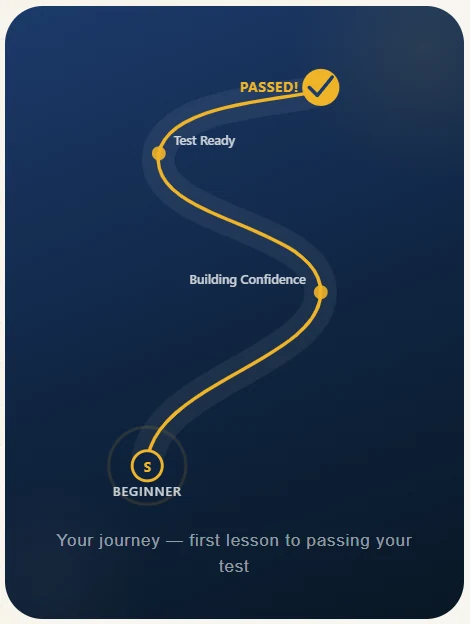
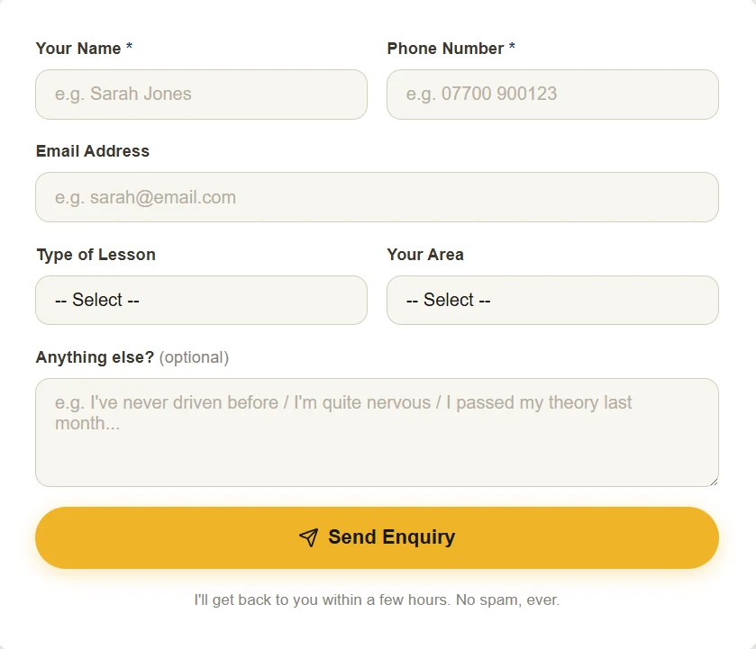
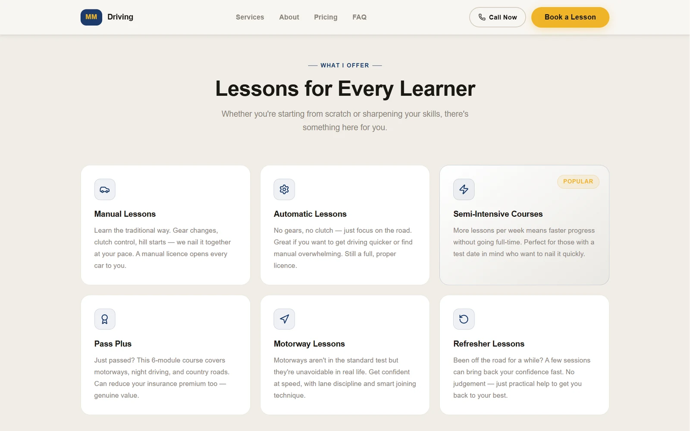
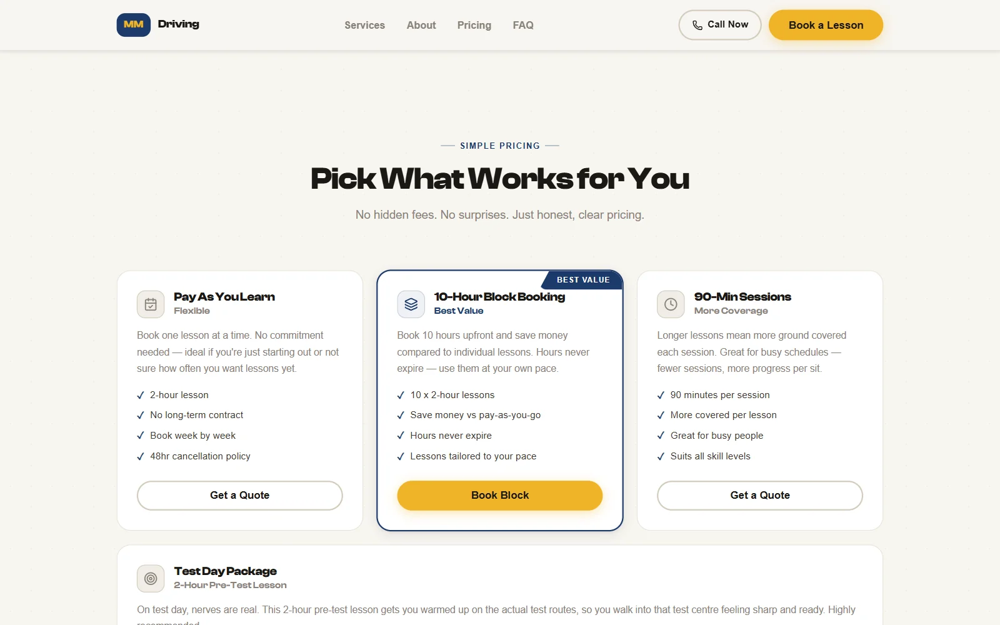
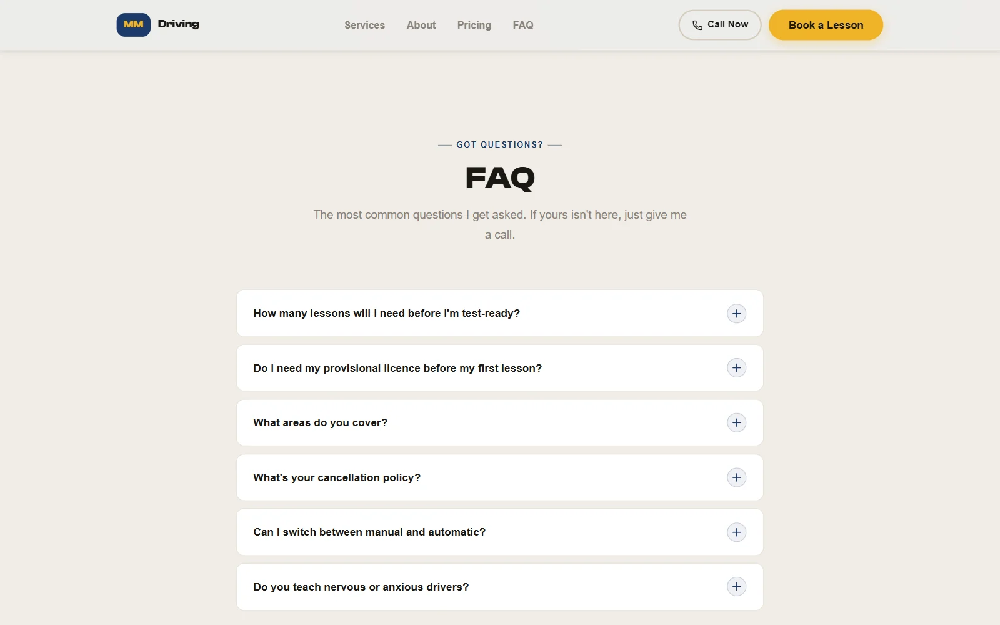

The brief
An instructor covering six East Midlands towns needed a site a nervous learner, or their parent, would trust, and that turns a visit into a booked first lesson.

One page, in the order a learner decides
The site is a single scrolling page that follows the questions a learner asks, in the order they ask them: who's teaching me, what lessons are there, what does it cost, how do I start, and how do I book. Every town is named rather than a vague "East Midlands", both for local search and for a parent scanning for their own town.


Key decisions
- Booking is always one tap awayThe header carries both "Call Now" and "Book a Lesson" and stays pinned while you scroll; on phones a bar at the bottom of the screen does the same job. Ranking well locally is wasted if booking takes effort.
- Pricing that points somewhereThree ways to pay, with the 10-hour block marked as best value, a separate test-day package, and the cancellation policy stated up front instead of in small print.
- Answer the worries before they're askedHow many lessons you'll need, whether you need a provisional licence first, switching between manual and automatic, and whether nervous drivers are welcome are all answered in an accordion FAQ, so the answers are there without turning the page into a wall of text.
- Calm and competent over loudA deep instructional navy with a warm gold for actions, a deliberate move away from the saturated palettes most local driving-school sites use.



Designing inside a real constraint
There was no budget for a backend, so there isn't one. The site is fully static and the enquiry form runs through Formspree. That one constraint shaped everything downstream: no accounts, no personalisation, nothing that assumes infrastructure the client isn't paying for.
Stack
- React 19
- TypeScript
- Vite
- CSS Modules
- Design tokens
- Formspree
- Netlify